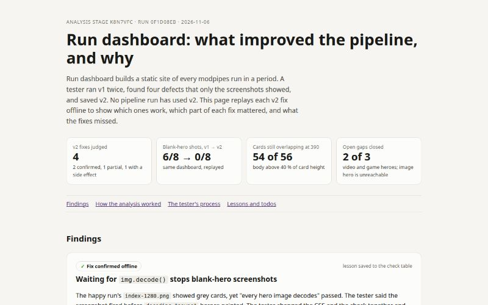

Inputs
- Test budget in minutes
- 45
- What do you want from this pipeline?
- Please build a pipeline that can look at everything run in a period of time (yesterday, today, the last 1 hour as defaults) and put together the pipeline name, the variables or user input collected by a concierge/input stage, and the outputs rendered and/or clickable in a beautiful dashboard showcasing the fruits of this high tech agentic building
Starred outputs
Test the pipeline · test-reportmd
What ran and how long, what worked, each defect with its evidence, each fix marked confirmed or unconfirmed, what to look at next
Run dashboard: test report
- Pipeline: Run dashboard,
2dfb2952-2633-4582-b2ea-e1e48ec4b5ad. Tested v1 and saved v2. - Test copy: "Run dashboard (test)",
b116d953-f391-42b4-a141-0f7ae3aa0954. The copy is now deleted, and its runs stay in history. - The pipeline has no loops, so no loop caps needed cutting. The test kept the prompts and models unchanged.
- No row in
lessons__pipeline_builder_todosconcerned Run dashboard, so no earlier todo applied. - The session started at 17:09 CST on 2026-11-06. Both runs finished by 17:12. The v2 fix landed at 17:14.
What ran
| Run | Path | Inputs | Runs gathered | Time |
|---|---|---|---|---|
8dfb05bf-4d9f-486a-8646-f1b0e8f002e9 |
happy | period=last-hour |
5 (2 done, 3 live) | 63 s, 23:09:44 to 23:10:47 UTC |
abf59137-831f-4dbf-a2f8-bea54ddbaff2 |
stress | period=2026-11-03..2026-11-06 |
56 (43 done, 2 failed, 4 cancelled, 7 live) | 2 min 38 s, 23:09:44 to 23:12:22 UTC |
The stress inputs push these edges from the understanding:
- An explicit date range with a date-only end.
- A large volume of 56 runs and 145 questions.
- Failed and cancelled runs.
- Seven live runs, including the other test run and a run waiting on an answer.
- Each test run appears inside the other run's period.
Stage times for the stress run:
- Toolkit: 2 s.
- Gather: 5 s.
- Heroes: 44 s for 56 heroes.
- Captions: 112 s on opus, at 0.81 USD.
- Build: under 1 s.
- Check: about 5 s.
- Overview: about 20 s.
What worked
All verified from files, not from stage summaries.
- Gather picked up the right runs in both periods, with correct counts by status and kind. The explicit range resolved to 2026-11-03 00:00 to 2026-11-07 00:00 local time (
stages/gather/outputs/runs.json). - Heroes rendered 56 of 56 with zero fallbacks: 28 page screenshots and 28 typographic cards (
abf59137…/stages/heroes/outputs/hero-report.json). No run in the period had an image or video as its primary starred output, so those two hero kinds stayed untested. - Captions covered every run id in both runs. The 56 keys match the 56 run ids exactly. Captions name the actual product, mark live runs as in progress, and give the self run the required caption.
- The happy run tagged its own run as "This dashboard" and sorted the run last. The stress run tagged the other copy run as a test run, which is correct.
- The check passed 15 of 15 in both runs. The stress check hit 115 index URLs, and every one answered. Axe found no serious or critical violations.
- The filter counts are right: 25 test, 14 builder, 2 failed and 4 cancelled.
- The overview flagged real visual defects instead of repeating the passing check. That is the behaviour the prompt asks for.
Defects, evidence and fixes
- Card text overlaps hero text. On typographic cards, the card's status chip and title sit on top of the hero's own title. White page heroes made the eyebrow chip hard to read. The cause was the 16:10 card shape with a scrim that faded out at 45 %.
- Evidence:
/home/alex/.modpipes/runs/8dfb05bf-4d9f-486a-8646-f1b0e8f002e9/stages/check/outputs/shots/sandboxes.png/home/alex/.modpipes/runs/0f1d08eb-5e04-4f01-b1cf-81347ae8f602/stages/kt6n75z/work/stress-index.png(Topic expert forge, Game forge v2, Stage splitter cards)- Both overview notes, section "What you saw".
- Fix in v2 (
build.mjsCSS):- Cards are 4:3.
- The scrim holds 84 % black to 55 % height.
- Hero images anchor at the left top, so a cropped typographic title keeps its start.
- Status: unconfirmed in a pipeline run. Verified offline: the stress data was rebuilt and checked with the v2 scripts, 15 of 15 passed, and the text no longer collides (
kt6n75z/work/smoke/shots/index-1280.png).
- Evidence:
- Check screenshot shows blank heroes.
index-1280.pngshowed grey gradients and no heroes, even though "every hero image decodes" passed. A real browser paints every hero. The screenshot fired before thedecoding="async"images painted. The happy overview then reported missing heroes that were present.- Evidence:
/home/alex/.modpipes/runs/8dfb05bf-4d9f-486a-8646-f1b0e8f002e9/stages/check/outputs/shots/index-1280.png- My own capture of the same URL:
kt6n75z/work/mine-1280.png.
- Fix in v2 (
check.mjs): the script awaitsimg.decode()on each hero and waits 300 ms before the screenshot. - Status: unconfirmed in a pipeline run. Verified offline: the smoke
index-1280.pngshows every hero.
- Evidence:
- Run-page screenshot shows the least useful page.
run-page.pngshowed the first run, which is the newest. That run was a live test run with no starred outputs and no questions (abf59137…/stages/check/outputs/shots/run-page.png).- Fix in v2: the check samples done runs with the most questions first.
- Status: unconfirmed in a pipeline run. Verified offline: the smoke
run-page.pngshows a Game forge concierge page with 14 answered questions and a rendered bible.
- Negative stage durations for live runs. Gather computes "now" before a sibling stage starts, so the Heroes stage showed
durationMs: -367(abf59137…/stages/gather/outputs/runs.json, run8dfb05bf, stages heroes and captions). The run page rounded the value to "0 s", so a person barely sees the defect.- Fix in v2: gather clamps both durations with
Math.max(0, …). - Status: unconfirmed.
- Fix in v2: gather clamps both durations with
v2 changes only the toolkit command. pipeline show after the update matches v2.json and contains all four fixes. Versions are saved in outputs/pipeline-versions/: v1.json, v2.json and NOTES.md.
Not a defect: sandboxes.png crops the viewer frame. The harness frames are fixed at 290 px and 900 px wide, so the crop is the shot's framing.
Lessons recorded
- Real
captionstable: digestruns.jsoninstead of reading the whole file, and assert caption counts. This lesson was ported from the copy's table. - Real
overviewtable: a blank-hero screenshot was a timing artefact. Report a screenshot that disagrees with a passing check, and say which is which.
What the next tester should look at first
- Run v2 once with
period=last-24h, then opencheck/outputs/shots/index-1280.pngandrun-page.png. Confirm heroes paint and card text sits clear of hero text. - Check the 4:3 card in the modpipes app viewer. The cards are taller, so the index scrolls more.
- Test image and video heroes. Neither path ran, because no run from 3 to 6 November had an image or video as its primary starred output. Point a test at a period that includes a Pixel loop forge or sprite run with a starred png, or add a starred mp4 fixture run.
- Test a game hero with
window.__game.start(). Game forge pages rendered as page screenshots. Nobody checked whether the start call fired.
Analyse the test · lessons-learned-sitehtml
A static site: which changes improved the pipeline, why, and the evidence behind each claim
Questions and answers
-
Confirm with the user asked · answered ·
Which runs belong on the dashboard for a period? Right now the last 24 hours hold 30 runs: real pipelines (Game forge, Pixel loop forge, Game forge concierge), '(test)' copies the pipeline builder ran, and the pipeline builder's own runs.
Every run, with filters (Recommended)
-
Confirm with the user asked · answered ·
How should a run's outputs show on the dashboard? A run can hold a playable game folder, a gallery of PNGs, markdown reports, JSON scores and screenshot folders. Starred outputs are the ones a person is meant to open.
Cards, then a run page, but with the cards being mini hero's in a way, like full background renders of the primary output where possible
-
Confirm with the user asked · answered ·
Where should the finished dashboard live? Every output of a run is served by the modpipes server at http://localhost:4810, so hero backgrounds, frames and links can point at outputs of other runs without copying them.
Dashboard run output only (Recommended)
-
Confirm with the user asked · answered ·
How much model work per run on the dashboard? A script can collect names, inputs, questions and answers, status, times, tokens and output links on its own. A model stage can add what a script cannot: a one-line caption of what each run made, read from its report.
caption per run using opus latest
-
Confirm with the user asked · answered ·
Here is the pipeline as I understand it. Variables: period (today by default; also yesterday, last-hour, last-24h, last-7d, or an explicit from..to range, local time). Stages: (1) a script collects every run that started in the period from the modpipes CLI and run homes: pipeline name, variables, every question and answer a stage exchanged with you, status, times, tokens, and every output with its served URL, starred first. (2) A script renders a hero image per run with headless Chromium: a screenshot of the primary starred output (a game or site, an image, a video frame, or a typographic card for a report). (3) An opus stage reads each run's starred markdown and writes a one-line caption and a two-line summary per run. (4) A build stage assembles a static site as the starred dir output: a front page of hero cards with a filter bar for test, builder, failed and cancelled runs, and a run page per run with starred outputs embedded live and every other output linked. All links point at http://localhost:4810, so nothing is copied. Is that the pipeline you want?
Yes, build that
Other outputs
- Confirm with the user · hammered-out-understanding.md 7.2KB
- Confirm with the user · scope.md 671B
- Research the topic · topic.md 11KB
- Research front-end approaches · frontend.md 9.3KB
- Research back-end approaches · backend.md (absent)
- Research the stack · stack.md 7.8KB
- Research modpipes · modpipes.md 12KB
- Plan and build the pipeline · pipeline-plan.md 5.4KB
- Plan and build the pipeline · built-pipeline.md 4.3KB
- Test the pipeline · pipeline-versions.dir 4.1KB
- Analyse the test · cli-tools-optional.md 7.0KB
| Stage | Group | Status | Model | Duration | Tokens |
|---|---|---|---|---|---|
| Confirm with the user | kwwtgqp | done | fable | 30 min 41 s | 983K |
| Research the topic | research | done | default | 2 min 17 s | 767K |
| Research front-end approaches | research | done | default | 1 min 35 s | 187K |
| Research back-end approaches | research | skipped | default | 0 s | 0 |
| Research the stack | research | done | default | 1 min 14 s | 255K |
| Research modpipes | research | done | default | 1 min 58 s | 654K |
| Plan and build the pipeline | plan | done | fable | 19 min 59 s | 3.6M |
| Test the pipeline | kz3ofpv | done | default | 6 min 02 s | 2.5M |
| Analyse the test | kwn1sne | done | default | 12 min 17 s | 6.1M |